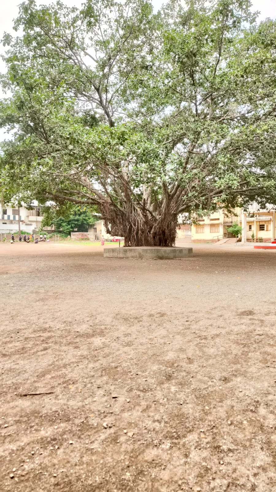
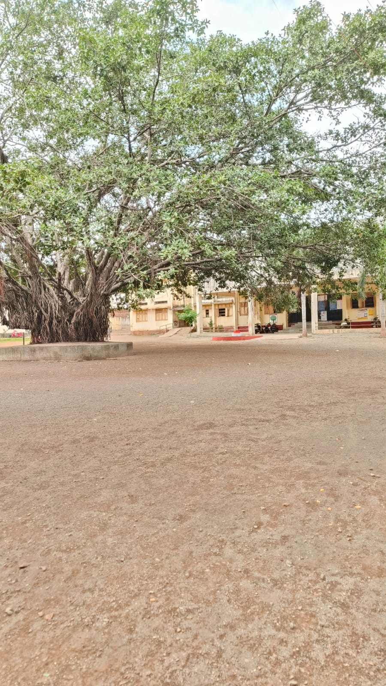
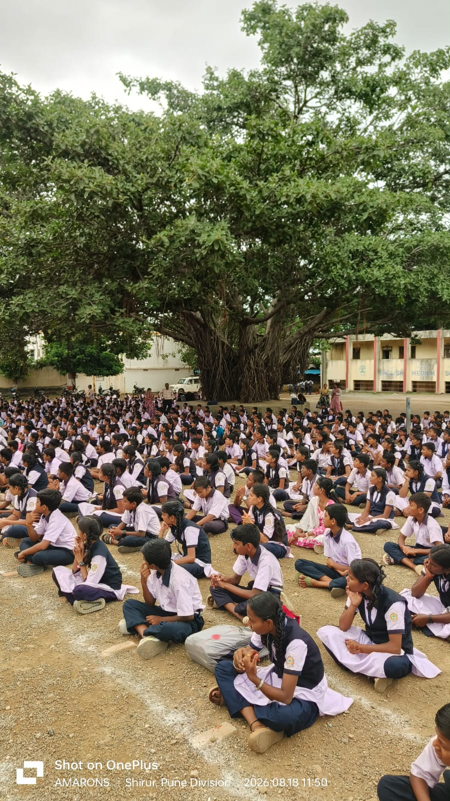
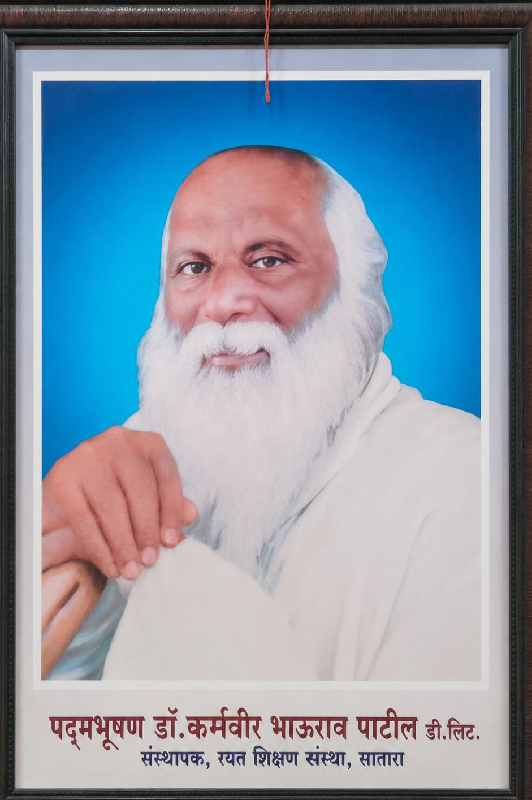

📸 वडाच्या झाडाच्या आठवणी
आमच्या शाळेच्या प्रांगणातील सुंदर क्षण






रयत शिक्षण संस्थेचे
न्यू इंग्लिश स्कूल अँड ज्यु.कॉलेज शिरूर
ता. शिरूर, जि. पुणे – ४१२२१०
ज्ञान • संस्कार • पर्यावरण • तंत्रज्ञान
ता. शिरूर, जि. पुणे – ४१२२१०
शिक्षणासोबत संस्कार, पर्यावरण संवर्धन आणि आधुनिक तंत्रज्ञानाची सांगड घालणारी शैक्षणिक वाटचाल.
ज्यांच्या योगदानातून हा शैक्षणिक वारसा उभा राहिला

रयत शिक्षण संस्थेचे- संस्थापक
शिक्षण सर्वसामान्यांपर्यंत पोहोचावे या ध्येयाने कार्य करणारे महान शिक्षणमहर्षी.
न्यू इंग्लिश स्कूल शिरूर शाखेचे- संस्थापक
शैक्षणिक विकासासाठी योगदान देणारे आणि या विद्यालयाच्या उभारणीत महत्त्वाची भूमिका बजावणारे संस्थापक.
एक वृक्ष... अनेक आठवणी... अनेक पिढ्यांचा साक्षीदार
आमच्या शाळेच्या प्रांगणात उभे असलेले हे भव्य वडाचे झाड केवळ एक वृक्ष नसून शाळेच्या अनेक वर्षांच्या आठवणींचे आणि संस्कृतीचे जिवंत प्रतीक आहे.
या वृक्षाच्या विशाल फांद्यांच्या सावलीत अनेक विद्यार्थी घडले, शिक्षकांनी विद्यार्थ्यांना मार्गदर्शन केले आणि शाळेतील असंख्य सुंदर क्षणांचे हे झाड साक्षीदार राहिले आहे.
असे मानले जाते की हे वडाचे झाड [येथे स्थापना वर्ष लिहा] या कालावधीत शाळेच्या प्रांगणात लावण्यात आले.
त्यानंतरच्या काळात या झाडाची वाढ होत गेली आणि आज त्याचा विस्तार शाळेच्या परिसराचे एक वैशिष्ट्य बनला आहे.
विद्यार्थ्यांच्या शैक्षणिक, सांस्कृतिक आणि सामाजिक उपक्रमांशी या वृक्षाच्या अनेक आठवणी जोडलेल्या आहेत. [येथे विशेष घटना / आठवण लिहा]
उन्हाळ्यात विद्यार्थ्यांना थंड सावली देणारे, पावसाळ्यात हिरवाईने नटणारे आणि अनेक पक्ष्यांना निवारा देणारे हे वडाचे झाड पर्यावरण संवर्धनाचे सुंदर उदाहरण आहे.
या ऐतिहासिक वृक्षाचे संवर्धन करणे ही केवळ शाळेची जबाबदारी नसून प्रत्येक विद्यार्थी, शिक्षक आणि समाजाची सामूहिक जबाबदारी आहे.
टीप: वरील इतिहासातील कंसातील माहिती तुम्ही शाळेच्या अधिकृत माहितीनुसार नंतर बदलू शकता.
आमच्या शाळेच्या प्रांगणातील सुंदर क्षण



आमच्या शाळेच्या वारशाला समर्पित
या विभागात शाळेच्या वडाच्या झाडावर तयार केलेले खास गाणे ऐकता येईल.
गाण्याचे बोल येथे लिहा...
गाणे आणि वडाच्या झाडाच्या आठवणींचा व्हिडिओ
शाळेच्या शैक्षणिक, तांत्रिक आणि नाविन्यपूर्ण वाटचालीसाठी कार्यरत
प्राचार्य
न्यू इंग्लिश स्कूल अँड ज्यु.कॉलेज शिरूर
पर्यवेक्षक
न्यू इंग्लिश स्कूल अँड ज्यु.कॉलेज शिरूर
कृत्रिम बुद्धिमत्ता प्रमुख
कनिष्ठ विद्यालय
कृत्रिम बुद्धिमत्ता प्रमुख
माध्यमिक विद्यालय
Thinking Coach
ENpower Pvt. Ltd.
B.Tech. • B.Ed. • E&TC Engineer
विद्यार्थ्यांमध्ये सर्जनशीलता, विचारशक्ती, AI आणि आधुनिक तंत्रज्ञानाचा वापर वाढविण्यासाठी विविध नाविन्यपूर्ण उपक्रम.
Thinking Coach
ENpower Pvt. Ltd.
B.Tech. • B.Ed. • E&TC Engineer
चला, आपल्या शाळेतील या ऐतिहासिक वडाच्या झाडाचे संवर्धन करूया आणि पुढील पिढ्यांसाठी हा वारसा जतन करूया.